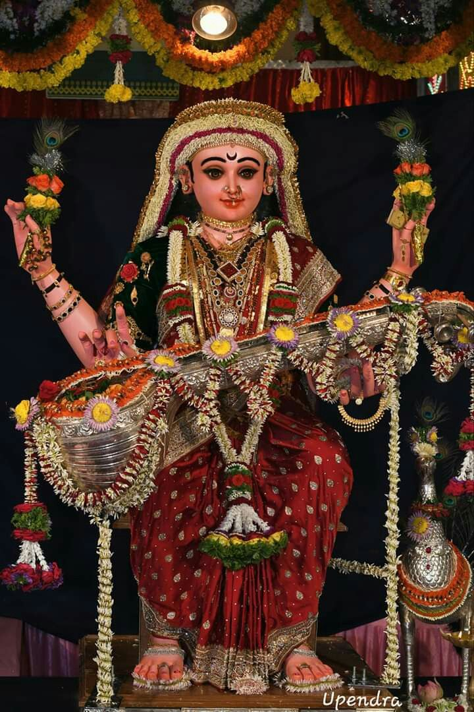
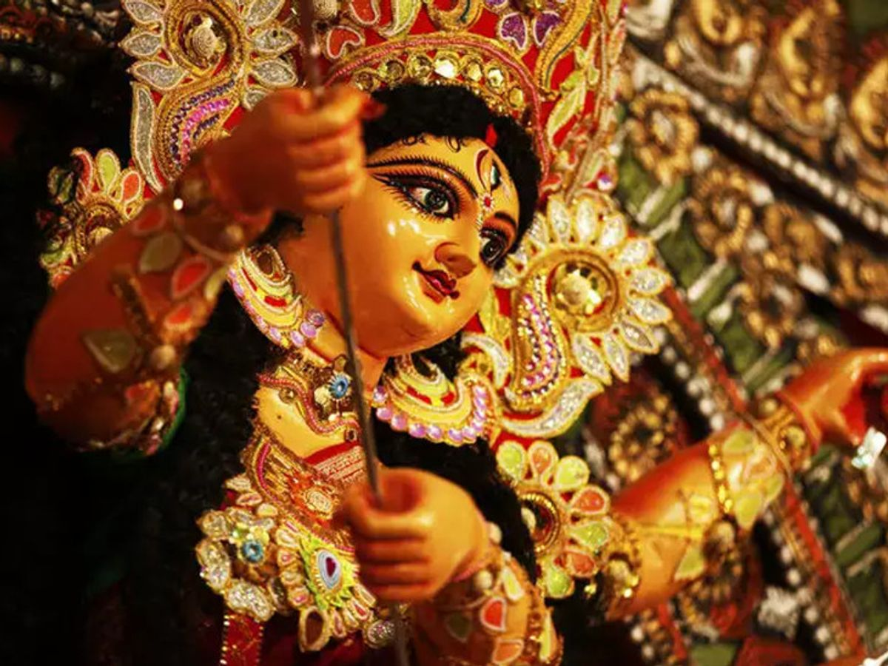
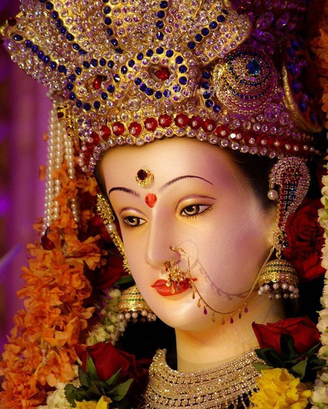

Sharda Navratri
Sharada Navaratri is the most celebrated of the four Navaratri, named after Sharada which means autumn. It commences on the first day (pratipada) of the bright fortnight of the lunar month of Ashvini. The festival is celebrated for nine nights once every year during this month, which typically falls in the Gregorian months of September and October. The exact dates of the festival are determined according to the Hindu lunisolar calendar, and sometimes the festival may be held for a day more or a day less depending on the adjustments for sun and moon movements and the leap year.
Chaitra Navratri
Chaitra Navaratri is the second most celebrated Navaratri, named after vasanta which means spring. It is observed during the lunar month of Chaitra (March–April). In many regions, the festival falls after spring harvest, and in others, during harvest. It also marks the first day of the Hindu lunisolar calendar, also known as the Hindu Lunar New Year, according to the Vikram Samvat calendar.
Megha Navratri
Magha Navaratri is observed during the lunar month of Magha (January–February). This Navratri is also known as Gupt (secret) Navratri. The fifth day of this festival is often independently observed as Vasant Panchami or Basant Panchami, the official start of spring in the Hindu tradition, wherein goddess Saraswati is revered through arts, music, writing, and kite flying. In some regions, the Hindu god of love, Kama is revered. Magha Navaratri is observed regionally or by individuals.
Ashada Navratri

Ashada Navaratri, also known as Gupta Navaratri, is observed during the lunar month of Ashadha (June–July), during the start of the monsoon season. Ashada Navaratri is observed regionally or by individuals. Ashadha Gupt Navratri (Hindi: गुप्त नवरात्र) is an auspicious 9-day observance that is dedicated to worshipping nine different forms of Goddess Shakti or Durga. It is one of the important festivities observed by Hindus with utmost devotion and enthusiasm.